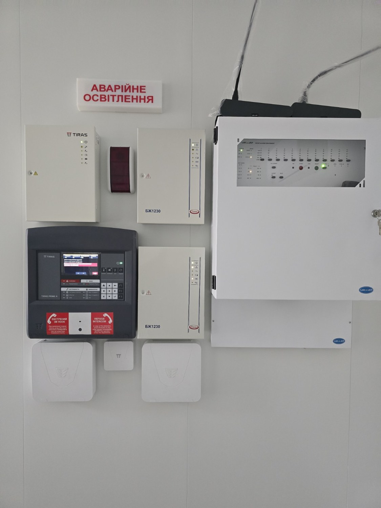
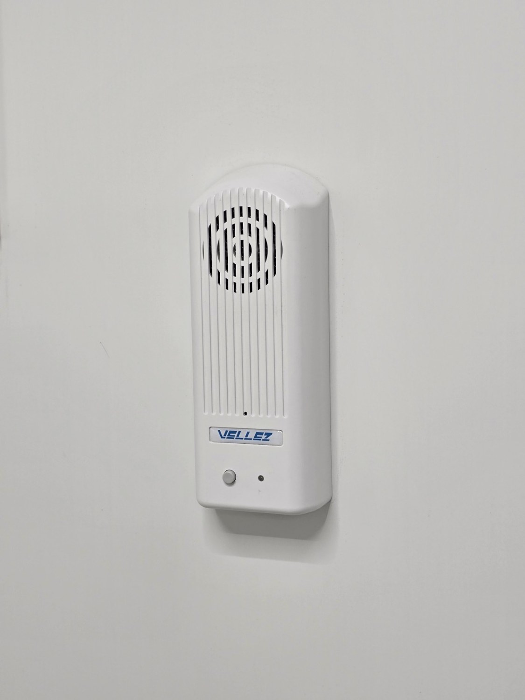
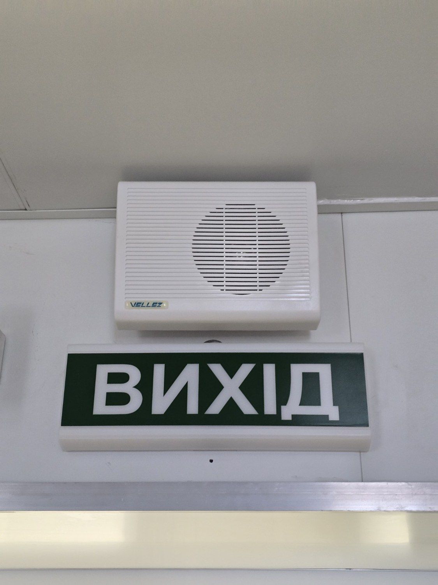
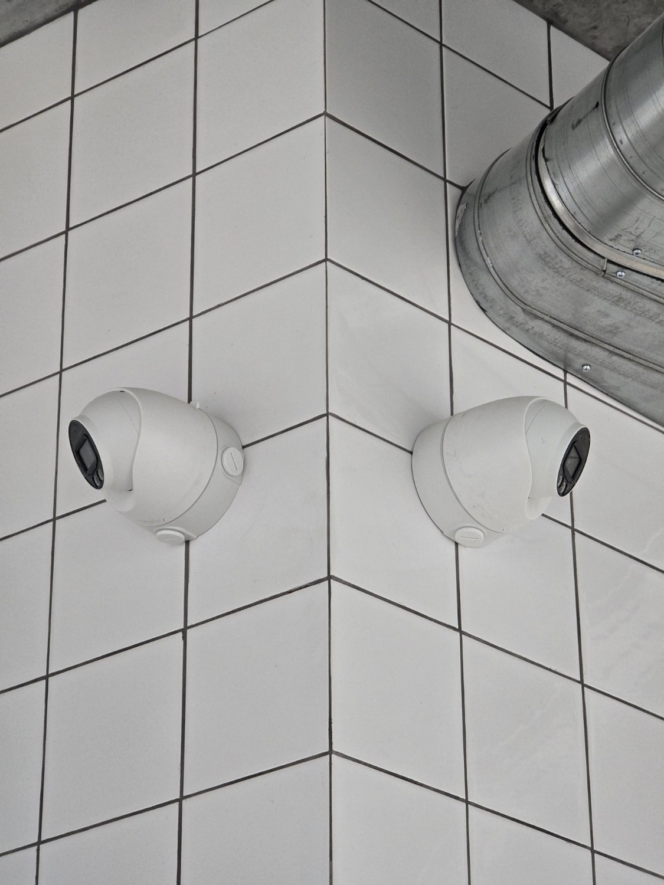
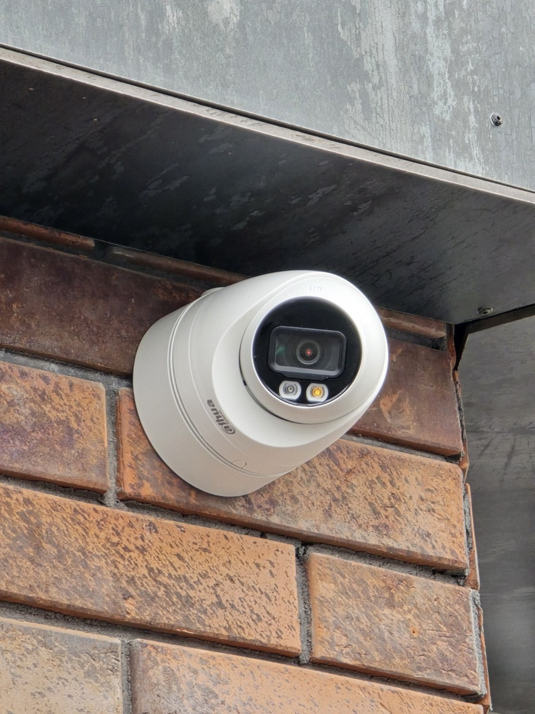
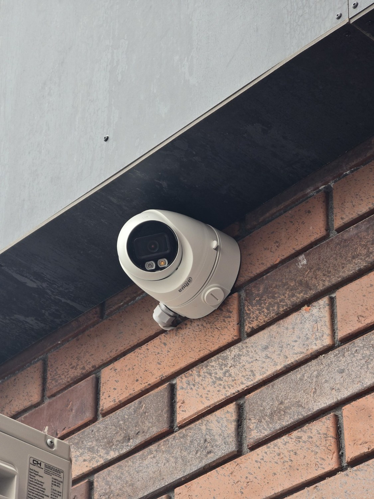

◉
Відеонагляд
Проєктування, монтаж і налаштування камер відеонагляду та відеоспостереження для будинків, магазинів, офісів, складів, підприємств і територій.
Комплексні системи безпеки для приватних будинків, квартир, офісів, магазинів, підприємств та інших об’єктів.
ПРОЄКТУЄМО · МОНТУЄМО · ЗАПУСКАЄМО · ОБСЛУГОВУЄМО
«Охоронні системи 24» — компанія з проєктування, монтажу, пусконалагодження та технічного обслуговування систем безпеки в Одесі та Одеській області.
Ми не нав’язуємо обладнання заради обладнання. Спочатку вивчаємо об’єкт, визначаємо ризики та завдання, після чого підбираємо оптимальне рішення. Працюємо з відеонаглядом, охоронною сигналізацією, системами Ajax, пожежною сигналізацією та пожежогасінням.
Від окремої камери до повністю інтегрованої системи безпеки об’єкта.
Проєктування, монтаж і налаштування камер відеонагляду та відеоспостереження для будинків, магазинів, офісів, складів, підприємств і територій.
Захист приміщень і територій від проникнення. Системи Ajax та інші рішення з урахуванням особливостей конкретного об’єкта.
Системи раннього виявлення пожежі, пожежна автоматика, оповіщення та передача тривожних повідомлень.
Проєктування та монтаж систем пожежогасіння відповідно до призначення, площі та характеристик об’єкта.
Реальні фотографії з наших об’єктів. Камери, охоронна та пожежна сигналізація — один підхід: продумане рішення та акуратний монтаж.






Вивчаємо об’єкт та визначаємо завдання.
Розробляємо рішення без зайвого обладнання.
Встановлюємо, підключаємо та налаштовуємо.
Перевіряємо роботу та здаємо систему в експлуатацію.
Забезпечуємо подальшу технічну підтримку.
Не продаємо стандартний набір — підбираємо систему під реальні задачі об’єкта.
Від обстеження та проєктування до запуску, здачі та технічного обслуговування.
Продумана прокладка кабелю, правильне позиціонування обладнання та налаштування системи.
Працюємо з приватними та комерційними об’єктами в Одесі та Одеській області.
Вартість залежить від кількості камер, типу обладнання, довжини кабелю, умов монтажу та вимог до архіву. Після короткого опису об’єкта можемо запропонувати оптимальний варіант.
Так. Проєктуємо, встановлюємо та налаштовуємо системи відеонагляду, камери та охоронну сигналізацію, зокрема Ajax.
Так. Виконуємо проєктування, монтаж, пусконалагодження та технічне обслуговування пожежної сигналізації та систем пожежогасіння.
Так. Працюємо в Одесі та Одеській області, зокрема в Чорноморську, Південному, Таїровому, Авангарді та інших населених пунктах.
Надішліть фото об’єкта або коротко опишіть задачу. Попередньо зорієнтуємо щодо рішення та вартості.